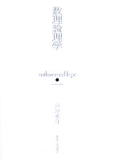

Site Map:
NLP Resources:
SNS:
Conferences/Workshops:
Links:
Books:
|  | | 「数理論理学」 | | 戸次大介著 | | 東京大学出版会 | | 定価(税込)：￥3,150 (320頁) | | 第2刷正誤表 | |
 | | 「日本語文法の形式理論 | | －活用体系・統語構造・意味合成－」 | | 戸次大介著 | | くろしお出版, 日本語研究叢書２４ | | 定価(税込)：￥4,410 (356頁) |
| 職歴- 2023年4月
- お茶の水女子大学基幹研究院自然科学系教授（～現在）
- 2015年4月
- お茶の水女子大学基幹研究院自然科学系准教授（～2023年3月）
- 2008年4月
- お茶の水女子大学理学部情報科学科教育担当（～現在）
- 2015年5月
- 産業技術総合研究所人工知能研究センター客員研究員（～2018年3月）
- 2011年11月
- 情報・システム研究機構(NII)客員准教授（連携研究部門）（～2018年3月）
- 2008年4月
- お茶の水女子大学大学院博士前期課程理学専攻情報科学コース教育担当（～2015年3月）
- 2008年4月
- お茶の水女子大学大学院博士後期課程理学専攻情報科学領域教育担当（～2015年3月）
- 2008年4月
- お茶の水女子大学大学院人間文化創成科学研究科准教授（～2015年3月）
- 2004年4月
- 東京大学21世紀COE「心とことば－進化認知科学的展開－」研究拠点形成特任研究員(PD)（2008年3月まで）
http://ecs.c.u-tokyo.ac.jp/
- 2000年10月
- 科学技術振興事業団個人研究推進事業さきがけ研究２１ （後に「科学技術振興機構戦略的創造研究推進事業さきがけプログラム」と改称） 「情報と知」領域専任研究員（～2003年9月）
http://www.jst.go.jp/kisoken/presto/ja/kenkyu/jyohou.html
- 1997年4月
- 日本学術振興会特別研究員(DC1)（2000年3月まで）
学歴- 2000年9月
- 理学博士（東京大学：博理第３８５７号）
- 2000年9月
- 東京大学大学院理学系研究科情報科学専攻博士課程修了
- 1998年7月
- University of Southern California, Linguistic Department (as a visiting scholar) （1999年6月まで）
- 1997年3月
- 理学修士 （東京大学：修理第７１５５号）
- 1997年3月
- 東京大学大学院理学系研究科情報科学専攻修士課程修了
- 1995年3月
- 東京大学理学部情報科学科卒業
- 1991年3月
- 私立函館ラ・サール高等学校卒業
所属学会- 2016年
- Logical Aspect of Computational Linguistics (LACL) 国際ワークショップ プログラム委員
- 2012年-2013年
- 人工知能学会評議員
- 2011年-
- 応用哲学会会員
- 2010年-2011年
- 人工知能学会企画委員
- 2008年-
- Logic and Engineering of Natural Language Semantics (LENLS) 国際ワークショップ オーガナイザ／プログラム委員
- 2006年-
- 言語処理学会会員
- 2005年-
- 日本言語学会会員
|